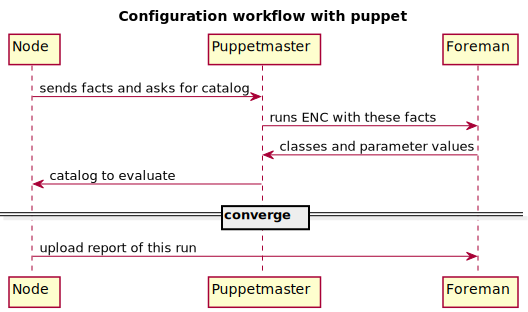

Foreman integration with Chef
Presenter Notes
BIO
- Marek Hulán
- IRC: mhulan #theforeman on freenode
- GitHub: ares
- work @ RedHat on Foreman project
Presenter Notes
Overview of this presentation
- Briefly show Foreman provisioning
- Status of Chef integration including live demo
- Future steps of further integration
- Other config management tools
Presenter Notes
Meet Foreman
Presenter Notes
Puppet workflow overiew

Presenter Notes
What do we support for chef world
Presenter Notes
Infrastrucure for this demo
Presenter Notes
Authentication
Presenter Notes
Let's see some action
Presenter Notes
Further integration
- Do we want to manage runlist and attributes in foreman?
- Is chef "source of truth"?
- Two way synchronization between Foreman and Chef?
- Do we want Foreman to become new Chef UI?
Presenter Notes
Support for other config management tools
Facts upload format
1 {
2 "name" : "fqdn.example.com",
3 "certname": "optional.certname.for.this.host",
4 "facts" : {
5 "fact1" : "value",
6 "fact2" : "value",
7 "fact2::nested::fact" : "value",
8 "_timestamp" : "2013-10-18 07:47:45 +0000",
9 "_type" : "puppet",
10 "operatingsystem" : "Debian",
11 "operatingsystemrelease": "7.0"
12 }
13 }
http://projects.theforeman.org/projects/foreman/wiki/Json-fact-format
Presenter Notes
Support for other config management tools
Reports upload format
1 {
2 "host" : "fqdn.example.com",
3 "reported_at": "2013-10-18 06:58:09 UTC",
4 "status" : { "applied" : n,
5 "restarted" : n,
6 "failed" : n,
7 "failed_restarts": n,
8 "skipped" : n,
9 "pending" : n
10 },
11 "metrics": { "resources": { 'total' : n }
12 "time" : { "resource_type1" : n,
13 "resource_type2" : n,
14 "total" : n }
15 },
16 "logs": [
17 { "log": { "sources" : { "source" : "resource name" },
18 "messages": { "message" : "resource message" },
19 "level" : "notice" }
20 }
21 ]
22 }
http://projects.theforeman.org/projects/foreman/wiki/Json-report-format
Presenter Notes
Most important notes
- We need to hear your stories
- You can already use foreman for provisioning, monitoring and inventory listing with Chef
- We want to go deeper

Presenter Notes
Links
- IRC: #theforeman @ freenode
- Project wiki: projects.theforeman.org/projects/foreman/wiki/Chef-support
- chef-client extension: github.com/theforeman/chef-handler-foreman
- foreman attributes plugin:
github.com/theforeman/foreman_chef